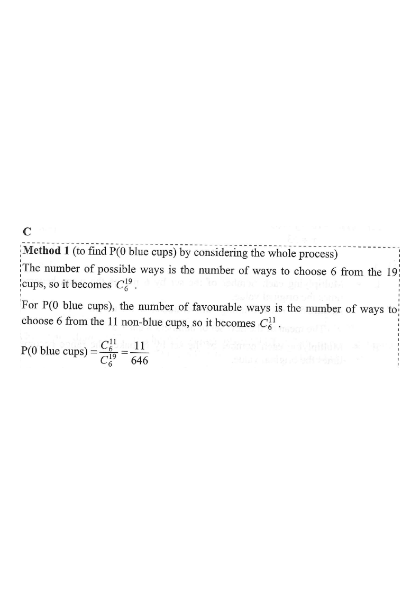

Step 1 — the bag contains 2 green + 8 blue + 9 red = 19 cups.

Green $=2$,
Blue $=8$, Red $=9$.
Total number of cups:
\[ 2+8+9 = 19 \]
Number of cups that are not blue:
\[ 2+9 = 11 \]
“At least 1 blue” and “0 blue” are complementary events,
so
\[ P(\text{at least 1 blue}) = 1 - P(\text{0 blue}). \]
Order does not matter (drawn at the same time),
so combinations:
\[ {}^{19}C_{6} \]
Choose 6 cups from the $2+9=11$ non-blue cups: \[ {}^{11}C_{6} \]
Hint: 0 blue means every chosen cup is green or red.\[ P(\text{0 blue}) = \frac{{}^{11}C_{6}}{{}^{19}C_{6}} = \frac{462}{27132} = \frac{11}{646} \]
Hint: ${}^{11}C_{6}=462$, ${}^{19}C_{6}=27132$;\[ P(\text{at least 1 blue}) = 1 - \frac{11}{646} = \frac{646-11}{646} = \frac{635}{646} \]
Hint: give the fraction a common denominator,Question. A bag contains 3 green cups, 6 blue cups and 9 red cups. If 4 cups are drawn at random at the same time, find the probability that at least 1 blue cup is drawn.
Alternative check: $P(\text{at least 1 blue}) = P(1B)+P(2B)+\cdots+P(6B)$ $= \dfrac{{}^{8}C_{1}{}^{11}C_{5}+{}^{8}C_{2}{}^{11}C_{4}+\cdots+{}^{8}C_{6}{}^{11}C_{0}}{{}^{19}C_{6}} = \dfrac{635}{646}$.